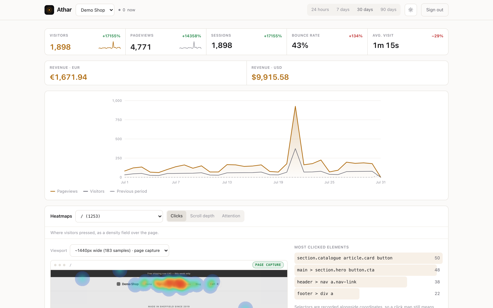
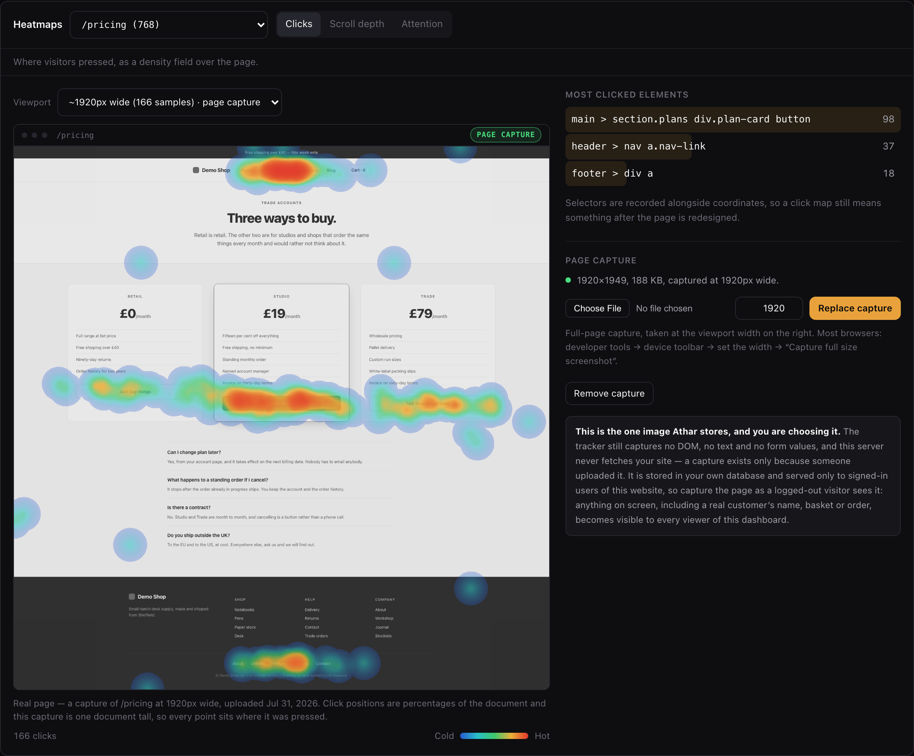
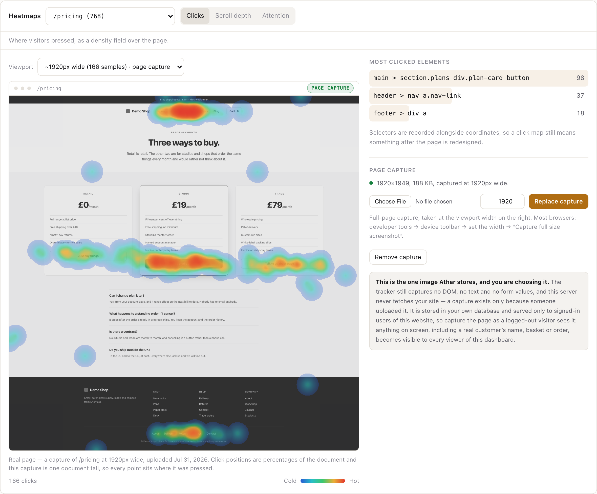
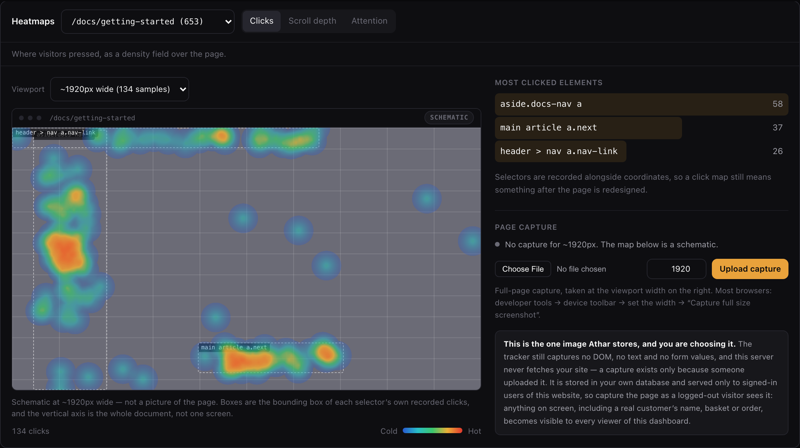
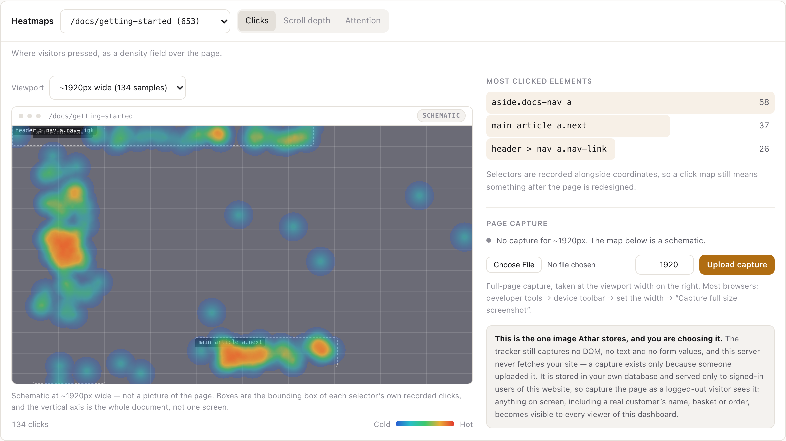

Self-hosted analytics · v0.1.0, early
See the trace.
Never the person.
Athar (أثر — Arabic for trace, impact) is self-hosted web analytics with heatmaps and ecommerce tooling, in one Go binary. No cookie, no third-party collector, no consent banner for the default install — because the beacon never leaves the server you run it on.


FIG. 1The reporting overview, as shipped. Pageviews, visitors, bounce rate and revenue per currency, over a 30-day trend with a previous-period ghost. Captured against a seeded demo instance — 1,909 visits and 4,804 pageviews across 30 days, including one deliberate spike day.
A trace, on purpose.
أثر (athar) means both trace and impact — the mark left behind, and the fact that it mattered. Every analytics tool is in the business of recording a trace of what happened on a page. The question that actually matters is who ends up holding it.
Athar's answer: only the operator, on infrastructure they control. There is no third party in the request path to receive a copy of the beacon, and no cookie to leave one on the visitor's device. The trace forms, gets counted, and stops at your server.
?source=1 always serves the readable original, so anyone can check what a site is running.Two days. Same visitor. No thread between them.
Heatmaps and behavioural sampling are only defensible because the operator self-hosts and holds the data plainly — this is not a claim that Athar is content-blind. What it removes is everything that does not need to exist for that: a persistent identifier, a third-party lookup, a raw IP sitting in a table.
// 1 · once per instance, generated and stored
const instance_secret = random(32 bytes)
// 2 · recomputed once per UTC day
salt = HMAC(instance_secret, "2026-07-31")
// 3 · per beacon — the IP is discarded right after this line
visitor = HMAC(salt, website_id ‖ ip ‖ user_agent)Unlinkable across days
The salt rotates at UTC midnight from an HMAC of the long-lived secret — not from the previous day's salt. Today's hash for a visitor cannot be derived from yesterday's. Cross-day tracking is absent from what is stored, not merely unimplemented.
No cross-site profile
The website id sits inside the hash, ahead of a separator. The same person on two sites hosted by one instance produces two unrelated hashes — the operator's own database cannot join them.
The IP never lands
The raw IP is used for exactly two things at ingest — this hash, and a local GeoIP lookup against an .mmdb file on disk — then discarded. Never written to the database, never logged, never in an error message.
Every click leaves a trace. Enough of them draw a picture.
That is what a heatmap literally is: hundreds of individual traces, each just a position and a selector, accumulated until a pattern is visible. A pattern is only worth reading over the page it was left on — so Athar draws it over the page.


FIG. 2Click density over the real page. The backdrop is a full-page capture of /pricing at 1920px, uploaded by the operator; the heat is 166 recorded clicks from the seeded instance. Nothing here is arranged by hand — the screenshot pipeline reads the heat canvas's own pixels at the coordinates of each real button and refuses to save the image unless the field is hot there.
How the page gets under the heat
The tracker still records three things per click and nothing else: a position as a percentage of the document, the viewport size, and a short CSS selector. It captures no DOM, no text, no form values, no screenshot — that boundary has not moved, and it is why the backdrop has to come from somewhere else.
backend/internal/api/pageimages.go.

FIG. 3No capture, and it says so. Where no image exists for the selected page and viewport, the view falls back to a wireframe built only from real recorded coordinates, badges itself SCHEMATIC, and never borrows another page's picture to fill the gap.
What a sample carries
- Click — a position, and the CSS selector of the element pressed.
- Scroll — the furthest depth that session reached.
- Attention — dwell time per tenth-of-page band.
What it never carries
- No DOM snapshot, no page text, no automatic screenshot.
- No form values, no keystrokes.
- No session replay — a different feature, deliberately not this one.
Positions are percentages of the document rather than viewport pixels, and the selector rides alongside, which is what keeps a click map meaningful after a redesign.
Everything a self-hosted analytics stack needs. Not much it doesn't.
Umami and Ackee are genuinely MIT and genuinely light, but stop at pageview counting. PostHog has heatmaps and needs ClickHouse, Kafka and Redis behind it. Matomo's heatmap tooling sits behind a paid plugin on a GPL core. MIT-or-Apache, lightweight, with heatmaps, ecommerce and built-in GeoIP in one binary was the specific combination missing — the full comparison is Plate 09.
- Tracking
- Cookieless by construction. Automatic pageviews including SPA route changes via
pushState/replaceState/popstate, custom events, revenue events, and opt-in heatmap sampling. One script tag. - Heatmaps
- Click density, scroll depth and attention bands, per page and per recorded viewport width, drawn over an operator-supplied capture of the page or over an honest schematic.
- Reporting
- Pageviews, unique visitors, sessions, bounce rate, average visit time; top, entry and exit pages; referrers and UTM campaigns; browser, OS, device, screen and language; country, region and city; custom events; realtime active visitors.
- Ecommerce
athar.revenue(amount, currency, orderId). Integer minor units per currency, never floats, never summed across currencies.- Geography
- In-process GeoIP from a local MaxMind-format
.mmdb— no lookup service, no network call. Not bundled, for size and licence; unset simply leaves the location fields empty. - Access control
- argon2id (64 MiB, t=2), server-side sessions storing only a SHA-256 of the token, httpOnly
SameSite=Laxcookies, double-submit CSRF on every state-changing route, login rate limiting keyed on username and address, owner/editor/viewer roles. Fail-closed throughout. - Hygiene
- Bot traffic dropped at ingest rather than recorded. Retention deletes whole visitor sessions past a configurable age, cascading to their events, heatmap samples, revenue rows and page captures — so a purge never leaves orphans to skew a later bounce rate.
SQLite on your laptop. Postgres in the cloud. Same binary either way.
The difference between a box you own and a managed deployment is one config value — database — not a fork. One database/sql implementation serves both engines; a small Dialect rewrites only placeholder syntax and a time-bucket expression. Every migration is written in the subset of SQL both engines accept literally, which is a real constraint on future schema work and the reason the two deployments cannot drift apart.
- Standalone
./atharon a home server, NAS or small VPS. Zero setup, storage is one file, loopback-bound by default.- Managed
- The same binary against a
postgres://DSN for a pooled deployment. Nothing above the storage layer changes. - Public
- Reached through cloudflared, ngrok, your own Ephor, or nginx/Caddy terminating TLS in front of it.
- Embedded
frame_ancestorslets a host shell embed the dashboard as an app tile behind its own routing and auth.
Revenue is just an event with money attached.
No separate ecommerce system, no product catalogue to sync — a purchase is a custom event with a revenue payload. Amounts convert to integer minor units at ingest, so money is never carried as a float, and the API reports amount_minor per currency rather than assuming two decimal places apply everywhere. They do not: JPY has no minor unit and KWD has three.
athar.revenue(49.99, 'USD', 'order_123', 'purchase');{ "totals": [ { "currency": "USD", "amount_minor": 483200 } ] }Running end to end in about a minute.
Requires Go 1.25+ and Node 22+ to build from source — Node only to minify the tracker and drive screenshots; the dashboard itself is hand-written HTML, CSS and JS embedded straight into the binary, with no bundle to go stale. The result is one static binary. Copy it wherever you like.
# build from source
git clone https://github.com/vul-os/athar.git
cd athar
npm install && npm run build
./athar
# drop one script tag on your site
<script defer src="https://your-athar-host/athar.js"
data-website-id="YOUR_WEBSITE_ID"
data-heatmap="true"></script>- 01Run itListens on
127.0.0.1:3100, stores to./athar.db. The first visit creates the one admin account. - 02Add a siteCreate a website in the dashboard and paste the script tag it gives you.
data-heatmap="true"turns on click, scroll and attention sampling. - 03Add a page captureOptional, and per page. Take a full-page screenshot at one viewport width and upload it from the heatmap view — that is what puts your real page under the density field.
- 04Go publicAthar binds loopback by default. Reach it with a tunnel or a reverse proxy — see Self-hosting.
Built and exercised end to end. Still young. Both are true.
Status: v0.1.0, early. The core collector, storage, auth and reporting paths are implemented and have been exercised end to end, but this is a young project — expect rough edges, and expect the API surface to move before 1.0.
Three columns rather than two, because there is a real difference between what a released version does, what is on main and not yet cut into a release, and what nobody has written. Collapsing the middle one into either neighbour would be a small lie in one direction or the other.
main and covered by tests, but is not in the 0.1.0 you can download. It lands in the next release.Kept current release by release: Roadmap → and Changelog →
The specific gap this fills.
In fairness to the table: Umami and Ackee are genuinely light and genuinely MIT, they just stop at pageviews. PostHog is the most feature-complete of the group but is a product-analytics platform first, on a multi-service stack. Matomo's ecommerce is mature and its heatmaps are a paid plugin. Plausible, GoatCounter and OpenReplay are copyleft licences many businesses avoid embedding.
| Project | Licence | Weight | Heatmaps | Ecommerce | Built-in GeoIP |
|---|---|---|---|---|---|
| Athar | MIT OR Apache-2.0 | Single Go binary | Click / scroll / attention | Revenue, multi-currency | Local .mmdb, no network call |
| Umami | MIT | Node/Next.js + Postgres or MySQL | — | — | — |
| Plausible CE | AGPL-3.0 | Elixir + ClickHouse | — | — | Optional, self-configured |
| Matomo | GPL-3.0+ | Heavy — PHP + MySQL | Paid plugin | Yes | Plugin |
| PostHog | Mostly MIT, some proprietary | Heavy — ClickHouse + Kafka + Redis | Toolbar heatmaps | Not the focus | — |
This is the whole trace. All of it.
A heatmap sample in Athar carries three things and no more. Below are those three fields, for you, on this page, computed in your browser in the last second. They are the entire shape of what a heatmap knows about a reader.
scroll_pct
—
The furthest point down this document you have reached, as a percentage of its full height.
dwell_ms
—
Time with this page in view, which Athar buckets into tenths of the page rather than storing whole.
viewport_w × viewport_h
—
Your viewport, so a map recorded on a phone is never averaged into one recorded on a desktop.
None of this was sent anywhere. This page carries no tracker, no analytics and no network call of any kind — the three numbers above were computed by twenty lines of JavaScript you can read in the source of this file, and they will be gone when you close the tab. On a site running Athar they would go to one place: a file on the operator's own disk.
On a real install there would be a little more than this alongside — the page path, the referrer, a coarse country from a local database file, your browser and operating system, and one salted hash that cannot be recomputed after midnight. That is the complete list. It is short on purpose, and it is the whole argument.
Set in Fraunces, Schibsted Grotesk and IBM Plex Mono — all three self-hosted from ./assets/fonts, with their licences alongside. Figures are unretouched captures of the shipped dashboard, regenerated by scripts/site-screenshots.mjs. No CDN, no remote font, no remote image, no analytics, no network call of any kind.